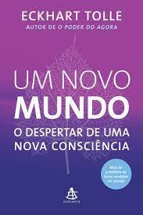

Um Novo Mundo: O Despertar de Uma Nova Consciência

Na obra literária lançada recentemente, intitulada "Um Novo Mundo: O Despertar da Consciência", os leitores são convidados a explorar como experimentar da mente humana em uma jornada transformadora.